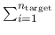
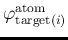
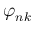

You can plot any quantity on Fermi surfaces as a color plot
by using fermisurfer program1.
fermi_velocity.x and fermi_proj.x are used
to generate an input file for fermisurfer from the output
of pw.xor projwfc.x.
fermi_velocity.x generates a color-plot of Fermi velocity.
You use it as follows:
K_POINT automatic.
$ fermi_velocity.x -in {pw.x input file}
vfermi.frmsf is generated
fermi_proj.x generates a color plot of an orbital character.
You use it as follows:
K_POINT automatic.
projwfc.x just to generate {prefix}.save/atomic_proj.*.
$ fermi_proj.x -in {input file}
Input-file format is as follows:
&PROJWFC
{The same as the input of projwfc.x}
/
{Number of target wavefunctions}
{Index of target WFC1} {Index of target WFC2} {Index of target WFC3} ...
It generates
||"proj.frmsf",
which can be read by FermiSurfer program.
There is an example of fermi_velocity.x and fermi_proj.x
in fermisurf_example/.